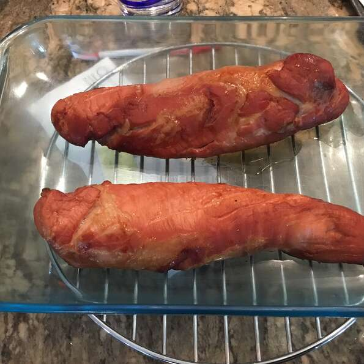

PORK

Description
As it can be noticed in the picture above, this recipe is mainly cooked with pig's meat.
It is favoured with some ingredients listed below
Ingredients
- Cup of soy sauce
- Cup bourbon
- 2 Tablespoons brown sugar
- 2 Cloves garlic, halved
- 3 Pounds pork tenderloin
Once you get all these ingredients, follow those steps below to cook it
Steps
- Mix together soy sauce, bourbon, brown sugar, and garlic. Pour over pork, cover,
and refrigerate at least 2 hours, turning occasionally.
- Preheat oven to 325 degrees F (165 degrees C). Remove pork from marinade, and place on rack of shallow roasting pan.
- Bake for 45 minutes or until a meat thermometer registers 145 degrees F (63 degrees C).
Get back to the main page